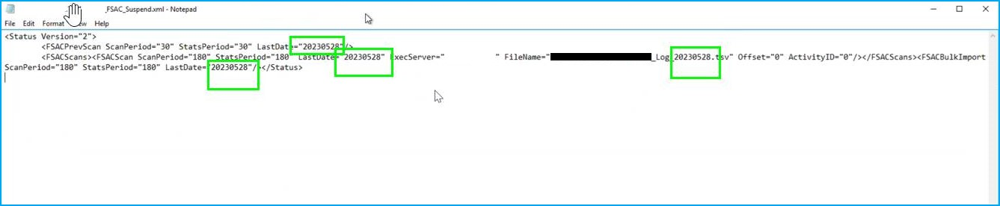
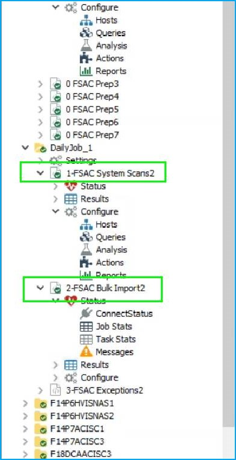

Symptom
No data has been imported in the database via FSAC system scan job.
Possible cause
Low disk space. FSAC system scan job has failed on several days due to the issue.
Resolution
-
Review the
SBTLogsfiles located in%STEALTHbits installation folder%\PSFAM\SBTLogs. The file must contain missing activity only.NOTE: If a TSV file for any activity previously collected is present, it will be duplicated.
-
Navigate to the
FSAAfolder (FSAA Tier 2 directory ) for the host − refer to the following path:%STEALTHbits installation folder%\StealthAUDIT\FSAA\%servername%. Modify theServername_FSAC_suspend.xmlfile. -
Update the dates in the file to reflect the day before the day to start collecting data from. Refer to the following screenshot:
 -
Remove
servername_activity.fsaadband anyactivity.fsaadb.oldfiles located in the FSAA Tier 2 directory. -
Run the 1-FSAC System Scans2 job, and verify it is running and collecting data from the job. Once confirmed, you can queue up the 2-FSAC Bulk Import2 job.

Script to clear the following tables for imported data after the beginning of the day
--Script to delete imported events for a specific host on/after a certain date.
declare @hostid int
declare @rescanDate date
set @hostid = (select id from sa_fsaa_hosts where host = 'PUTYOURHOSTNAMEHERE')
set @rescanDate = '1/1/2049'
SELECT [ID]
into #eventsToDelete
FROM [SA_FSAC_ActivityEvents] a
where host = @hostid and AccessTime >= @rescanDate
--select *
delete x
from SA_FSAC_RenameTargets x inner join #eventsToDelete e on x.ActivityID = e.ID where x.host = @hostid
--select *
delete x
from SA_FSAC_OwnerChanges x inner join #eventsToDelete e on x.ActivityID = e.ID where x.host = @hostid
--select *
delete x
from SA_FSAC_PermissionChanges x inner join #eventsToDelete e on x.ActivityID = e.ID where x.host = @hostid
--select *
delete x
from SA_FSAC_ActivityEvents x where x.host = @hostid and x.AccessTime >= @rescanDate
--select *
delete x
from SA_FSAC_DailyActivity x where x.host = @hostid and x.ActivityDate >= @rescanDate
drop table #eventsToDelete